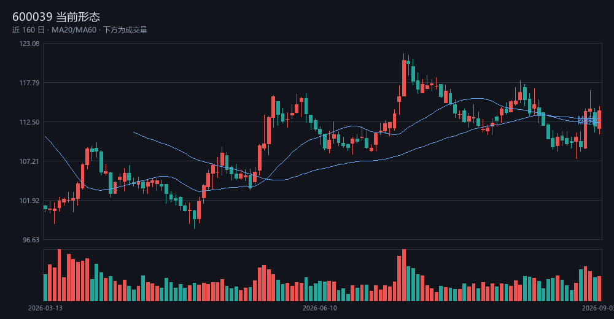
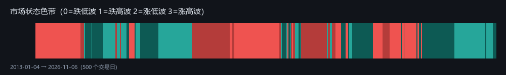
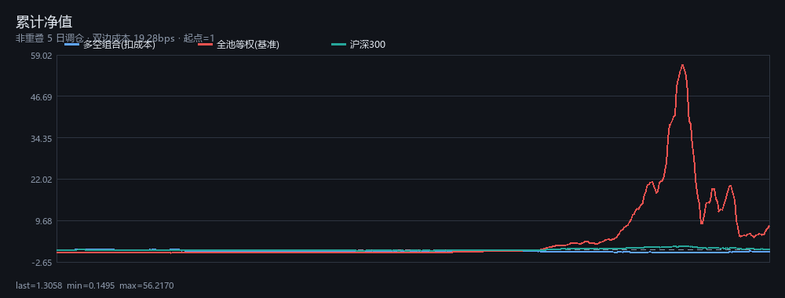
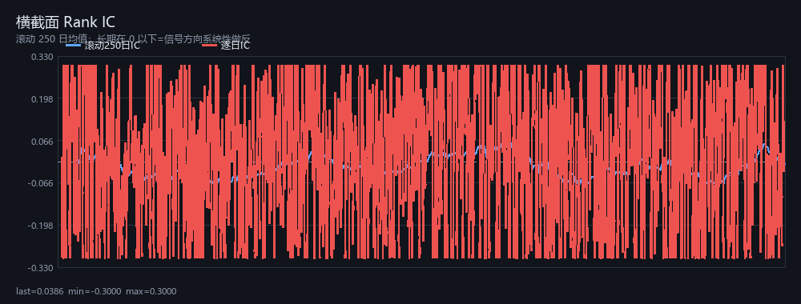
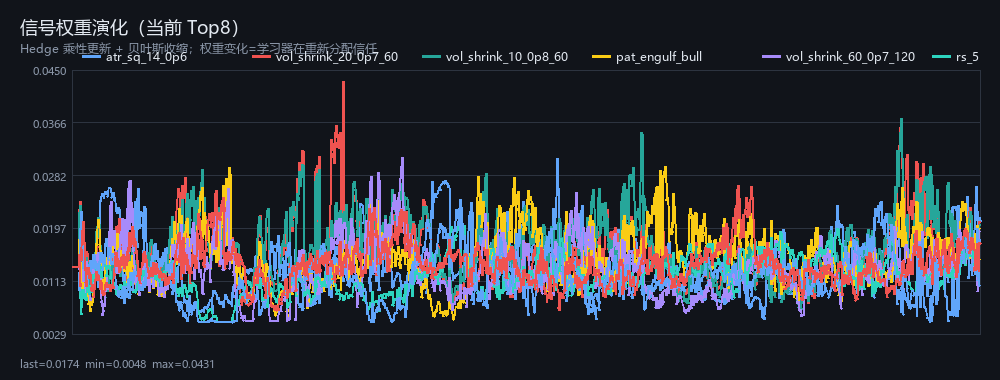

信号方向系统性做反（IC t=-2.48）→ 系统已自动反向使用；但反向后的优势尚未达到显著，只可小仓位验证
Meta 层方向：反着用（IC t=-2.51）





| 信号 | 族 | 权重 | 命中率 | 更新次数 |
|---|---|---|---|---|
| ma_align_5_10_20_60 | ma_slope | 0.0254 | 0.534 | 3334 |
| mom_20 | mom | 0.0225 | 0.532 | 3334 |
| pat_engulf_bear | pattern | 0.0216 | 0.546 | 3001 |
| rs_60 | rs | 0.0214 | 0.534 | 3334 |
| vol_shrink_10_0p8_60 | vol_shrink | 0.0211 | 0.519 | 3035 |
| atr_sq_14_0p6 | atr_stop | 0.0206 | 0.577 | 1712 |
| rs_20 | rs | 0.0206 | 0.518 | 3334 |
| vol_shrink_20_0p7_60 | vol_shrink | 0.0197 | 0.535 | 2811 |
| ma_slope_20_5 | ma_slope | 0.0195 | 0.503 | 3334 |
| dist_ma_20_pos8 | dist_ma | 0.0191 | 0.551 | 3244 |
1. 先看结论：如果写着"统计上无优势"，就不要下单——这不是保守，这是纪律。
2. 再看 IC 图：滚动 250 日 IC 长期在 0 以下，说明技术信号方向是反的，系统会自动反向使用（Meta 层）。
3. 然后看形态：趋势/波动/距高点 + 历史类比分布，比"我觉得会涨"更有信息量。
4. 最后看权重：权重变化说明学习器在重新分配信任，突然放大的信号值得单独复核。
本页为研究工具输出，不构成投资建议。所有结论均附统计检验，样本外表现未知。